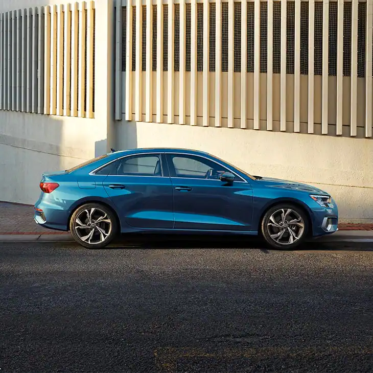
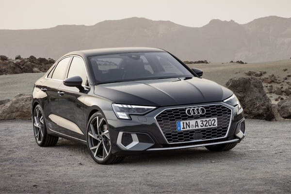

Any way you look at it, the new, dynamic exterior design of
the Audi A3 continues to reveal each muscular and chiseled
detail.
 Efficient, dynamic, comfort, automatic or
individual - select the mode that best suits
your drive.
Note: Photos are great, but 360 is better.
The Audi A3 has 1 Diesel Engine and 1 Petrol Engine on offer.
The Diesel engine is 1968 cc while the Petrol engine is 1395 cc.
It is available with Automatic transmission.
Depending upon the variant and fuel type the A3 has a mileage of 19.2 to 20.38 kmpl & Ground clearance of A3 is 165mm.
The A3 is a 5 seater 4 cylinder car and has length of 4456mm, width of 1960mm and a wheelbase of 2637mm.